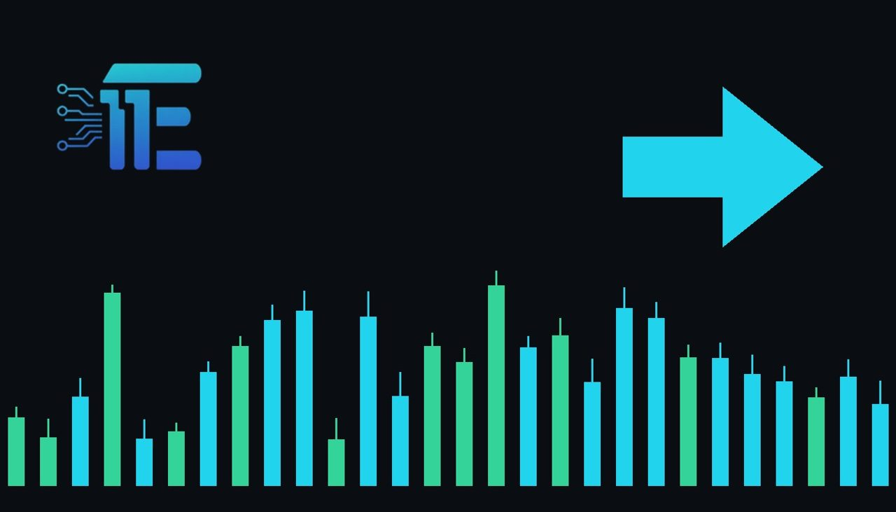

Gold Rebounds As Market Jitters Drive Liquidity Demandមាសងើបឡើងវិញខណៈភាពតានតឹងទីផ្សារជំរុញតម្រូវការសាច់ប្រាក់
XAU/USD impact: ◆ Mixedផលប៉ះពាល់លើ XAU/USD: ◆ ចម្រុះ

មាសកំពុងព្យាយាមងើបឡើងវិញបន្ទាប់ពីខែតុលាដ៏អဆိုးបំផុតចាប់តាំងពីឆ្នាំ 2008 មក ដោយសារភាពរំជើបរំជួលក្នុងទីផ្សារបានប្តូរ ലോហៈនេះទៅជាប្រភពសាច់ប្រាក់។ ការណ៍នេះបង្ហាញពីសម្ពាធជុំវិញកម្រិត USD 4,000 សម្រាប់អ្នកជួញដូរ XAU/USD។
មាសកំពុងព្យាយាមងើបឡើងវិញបន្ទាប់ពីខែតុលាដ៏អဆိုးបំផុតចាប់តាំងពីឆ្នាំ 2008 មក ដោយសារភាពរំជើបរំជួលក្នុងទីផ្សារបានប្តូរ ലോហៈនេះទៅជាប្រភពសាច់ប្រាក់។ ការណ៍នេះបង្ហាញពីសម្ពាធជុំវិញកម្រិត USD 4,000 សម្រាប់អ្នកជួញដូរ XAU/USD។
Gold is trying to stage a recovery following its worst monthly performance in October since 2008. Market jitters are currently turning the precious metal into a source of liquidity rather than a traditional safe haven, according to Suki Cooper, Standard Chartered Global Head of Commodities Research. Cooper highlighted the ongoing downward pressure near the USD 4,000 mark and discussed where potential support may emerge.
មាសកំពុងព្យាយាមងើបឡើងវិញជាបន្តបន្ទាប់ បន្ទាប់ពីការធ្លាក់ចុះខែតុលាដ៏អဆိုးបំផុតរបស់ខ្លួនចាប់តាំងពីឆ្នាំ 2008 មក។ ជាជាងការរក្សាទុកជាទ្រព្យសុវត្ថិភាពបែបប្រពៃណី យោងតាមការបញ្ជាក់ពីលោកស្រី Suki Cooper ប្រធានផ្នែកស្រាវជ្រាវទំនិញសកលនៅធនាគារ Standard Chartered។ លោកស្រី Cooper បានគូសបញ្ជាក់ពីសម្ពាធបន្តបន្ទាប់នៅជុំវិញកម្រិត USD 4,000 និងបានពិភាក្សាអំពីកន្លែងដែលការគាំទ្រតម្លៃអាចនឹងកើតមានឡើង។
The transmission channel for XAU/USD in this scenario involves liquidity demand and broader market sentiment. When investors face sudden financial stress or margin calls across wider asset classes, they often liquidate holdings in gold to raise cash, temporarily overriding its safe-haven appeal and putting downward pressure on prices despite underlying economic uncertainties.
ច្រកបញ្ជូនសម្រាប់ XAU/USD នៅក្នុងស្ថានភាពនេះពាក់ព័ន្ធនឹងតម្រូវការសាច់ប្រាក់ និងអារម្មណ៍ទូទៅរបស់ទីផ្សារ។ នៅពេលដែលអ្នកវិនិយោគប្រឈមមុខនឹងភាពតានតឹងផ្នែកហិរញ្ញវត្ថុ ឬតម្រូវការរតនាគារលើទ្រព្យសកម្មផ្សេងៗ ពួកគេច្រើនតែលក់មាសចេញដើម្បីប្រមូលសាច់ប្រាក់ ដែលធ្វើឲ្យការទាក់ទាញជាទ្រព្យសុវត្ថិភាពត្រូវខកខានជាបណ្តោះអាសន្ន និងដាក់សម្ពាធចុះក្រោមលើតម្លៃ ទោះបីជាមានភាពមិនប្រាកដប្រជាផ្នែកសេដ្ឋកិច្ចក៏ដោយ។
A balanced view of the market indicates that supportive conditions for gold would typically stem from renewed safe-haven buying if wider financial instability deepens or if central bank policy shifts toward monetary easing. Conversely, factors that would pressure the metal include persistent liquidations for cash, strengthening of the US dollar, or rising real yields that reduce the attractiveness of non-yielding bullion.
ទស្សនៈមានតុល្យភាពនៃទីផ្សារបង្ហាញថា លក្ខខណ្ឌដែលគាំទ្រដល់មាសជាទូទៅគឺការទិញជាទ្រព្យសុវត្ថិភាពជាថ្មី ប្រសិនបើអស្ថិរភាពហិរញ្ញវត្ថុទូលំទូលាយកើនឡើង ឬប្រសិនបើគោលនយោបាយរបស់ធនាគារកណ្តាលប្តូរទិសដៅឆ្ពោះទៅរកការបន្ធូរបន្ថយអត្រាការប្រាក់។ ផ្ទុយទៅវិញ កត្តាដែលនឹងដាក់សម្ពាធលើមាសរួមមានការលក់ចេញជាបន្តបន្ទាប់ដើម្បីយកសាច់ប្រាក់ ការឡើងថ្លៃនៃដុល្លារអាមេរិក ឬការកើនឡើងនៃអត្រាការប្រាក់ពិតប្រាកដ ដែលកាត់បន្ថយភាពទាក់ទាញនៃមាសដែលគ្មានការប្រាក់។
Traders should watch upcoming macroeconomic data releases, shifts in central bank rhetoric regarding interest rates, and overall liquidity trends in global markets. Monitoring how XAU/USD reacts around key technical support levels, such as the USD 4,000 threshold, will also provide vital clues for market direction.
អ្នកជួញដូរគួរតែតាមដានទិន្នន័យម៉ាក្រូសេដ្ឋកិច្ចដែលនឹងចេញផ្សាយ ការប្រែប្រួលនៃសាររបស់ធនាគារកណ្តាលពាក់ព័ន្ធនឹងអត្រាការប្រាក់ និងនិន្នាការសាច់ប្រាក់សរុបនៅក្នុងទីផ្សារសកល។ ការតាមដានពីរបៀបដែល XAU/USD ប្រតិកម្មជុំវិញកម្រិតគាំទ្របច្ចេកទេសសំខាន់ៗ ដូចជាកម្រិត USD 4,000 ផងដែរ នឹងផ្តល់នូវតម្រុយសំខាន់ៗសម្រាប់ទិសដៅទីផ្សារ។
Key takeawaysចំណុចសំខាន់ៗ
- Gold attempts to recover from its worst October performance since 2008.
- មាសព្យាយាមងើបឡើងវិញពីខែតុលាដ៏អဆိုးបំផុតចាប់តាំងពីឆ្នាំ 2008។
- Market jitters are converting the metal into a source of liquidity rather than a safe haven.
- ភាពរំជើបរំជួលក្នុងទីផ្សារបានប្តូរមាសទៅជាប្រភពសាច់ប្រាក់ជាជាងទ្រព្យសុវត្ថិភាព។
- Traders are closely watching price action and support levels near the USD 4,000 mark.
- អ្នកជួញដូរកំពុងតាមដានយ៉ាងដិតដល់នូវកម្រិតគាំទ្រជុំវិញ USD 4,000។
Original commentary by THE MARKET CODE, based on public reporting from Yahoo! Finance: GC=F News. Written with the help of AI. Educational only, not financial advice.
មតិវិភាគដើមដោយ THE MARKET CODE ផ្អែកលើការរាយការណ៍សាធារណៈពី Yahoo! Finance: GC=F News។ សរសេរដោយមានជំនួយពី AI។ មាតិកាអប់រំប៉ុណ្ណោះ មិនមែនជាដំបូន្មានហិរញ្ញវត្ថុទេ។